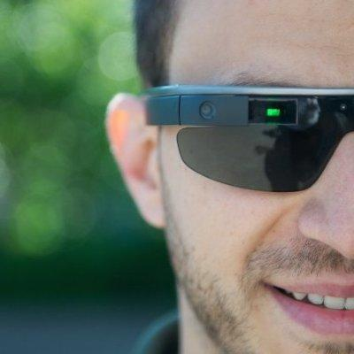

Data scientist, Head of AI at Beamery, and researcher in lifelogging and AI.
I build AI products that help people and organisations make better decisions. Today I lead AI at Beamery, where my team turns data about skills, roles and careers into practical tools for talent and workforce planning.
Before industry, I spent years in research, working on how machines can understand images and on lifelogging: capturing and making sense of the data people generate as they go about their lives. That background still shapes how I approach applied AI, with a focus on solid evaluation, real users and responsible use of personal data.
I lead the AI function at Beamery, a talent lifecycle platform used by large enterprises. The work spans strategy, research and engineering: shaping where AI adds real value for customers, growing the team, and taking models from prototype to production at scale.
My research sits at the meeting point of computer vision, information retrieval and personal data. At Dublin City University I worked on lifelogging systems and helped organise the NTCIR Lifelog evaluation tasks, which give researchers shared datasets and benchmarks for searching personal lifelogs. Earlier, in Grenoble, I worked on automatic image annotation and visual concept detection.
A live clock that estimates how much CO₂ and methane the world and major emitting countries have released so far this year, second by second. It projects from official annual data, including the Global Carbon Budget.